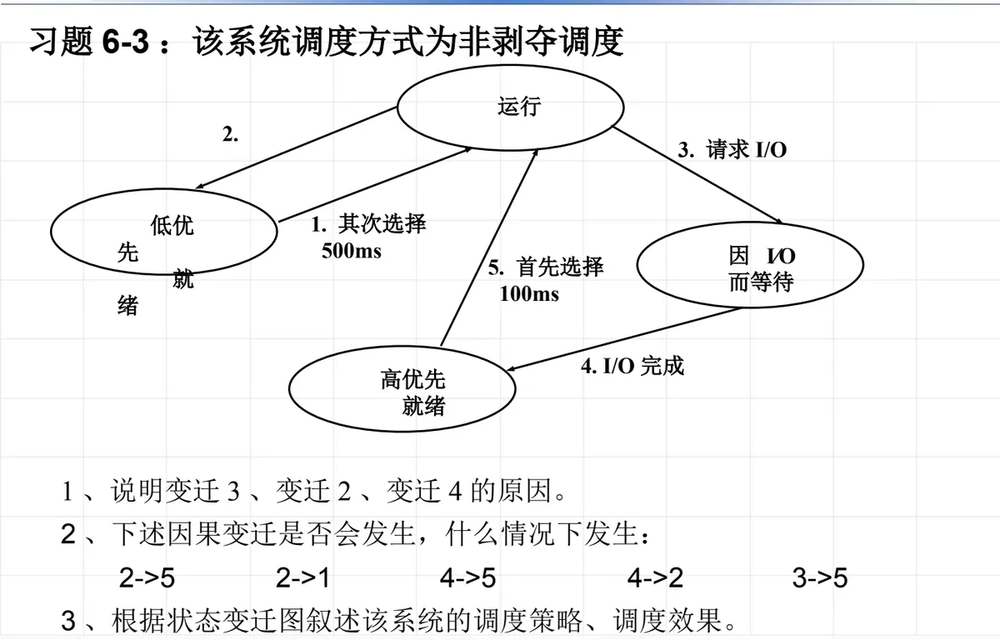

操作系统原理 · 第 6 章 处理机调度
6.9 习题
本节是第 6 章的习题课。前七节把处理机调度的概念与算法依次讲完，这一节用两道教材习题把它们串起来练一遍：第一题给出一张进程状态变迁图，练的是「变迁由什么引起」以及「某种因果变迁到底能不能发生」——判断的关键是调度方式；第二题给三个进程的计算与 I/O 序列，练的是不可抢占的优先级调度下，处理机究竟按什么次序、各占用多长时间。两道题都要求把「调度方式」这条前提放在最前面看。
1. 习题 6-3：非剥夺方式下的进程状态变迁
题目：某系统的进程状态变迁图如图 1 所示（设该系统的进程调度方式为非剥夺方式）。
- （1）说明一个进程发生变迁 3 的原因是什么？发生变迁 2、变迁 4 的原因又是什么？
- （2）下述因果变迁是否会发生，如果有可能的话，在什么情况下发生？① 2→5；② 2→1；③ 4→5；④ 4→2；⑤ 3→5；
- （3）根据此进程状态变迁图叙述该系统的调度策略、调度效果。

先把图读懂。图上有四个进程状态——运行、高优先就绪、低优先就绪、因 I/O 而等待，五个编号的变迁分别是：
- 变迁 1（其次选择）：低优先就绪 → 运行，时间片 500 ms；
- 变迁 2（时间片到）：运行 → 低优先就绪；
- 变迁 3（请求 I/O）：运行 → 因 I/O 而等待；
- 变迁 4（I/O 完成）：因 I/O 而等待 → 高优先就绪；
- 变迁 5（首先选择）：高优先就绪 → 运行，时间片 100 ms。
其中变迁 1 与变迁 5 都是「就绪 → 运行」，区别只在于从哪个就绪队列里挑：高优先就绪队列非空时先挑它（变迁 5），只有它空了才轮到低优先就绪队列（变迁 1）。
（1）变迁发生的原因
- 发生变迁 3 的原因：当运行进程在执行过程中，需要等待某事件的发生才能继续向下执行时（提出 I/O 请求），会发生变迁 3。
- 发生变迁 2 的原因：运行进程在分得的时间片 100 ms 或 500 ms 内未完成，当其时间片到时将发生变迁 2。
- 发生变迁 4 的原因：当等待进程等待的事件发生了（I/O 完成），将会发生变迁 4。
（2）因果变迁是否会发生的判断
- ① 2→5 可能发生。条件是：高优先就绪队列非空。变迁 2 把进程送回低优先就绪队列，处理机空闲下来后，只要高优先就绪队列里有进程，就会先发生变迁 5。
- ② 2→1 可能发生。当运行进程的时间片到时发生变迁 2，若此时高优先就绪队列为空，就必然引起低优先就绪队列中的一个就绪进程被调度执行，即发生变迁 1。
- ③ 4→5 不可能发生。因为采用的是非剥夺调度方式：变迁 4 只把进程放进高优先就绪队列，正在运行的进程不会被它打断，它必须等到当前进程自己让出处理机之后才有机会运行。
- ④ 4→2 不可能发生。变迁 4 的起点是因 I/O 而等待状态，而变迁 2 的起点是运行状态，二者没有共同的起点。
- ⑤ 3→5 可能发生。条件是：高优先就绪队列非空。变迁 3 让运行进程转入等待，处理机空出来，此时若高优先就绪队列非空就发生变迁 5。
把这五问放在一起看，判断的诀窍是两条：一看前一个变迁把进程送进了哪个队列（送进低优先就绪还是高优先就绪），二看调度方式是否允许抢占——非剥夺方式下，「就绪队列里来了新进程」这一件事本身不构成变迁 5 的理由，所以 4→5 不可能发生；而 2→5 之所以可能，是因为变迁 2 发生后处理机确实空出来了，此时再按规则挑选，才轮到变迁 5。
（3）调度策略与调度效果
调度策略：首先调度高优先就绪队列中的进程（一般是 I/O 型进程）投入运行，给高优先就绪队列中的进程分配的时间片大小为 100 ms；只有当高优先就绪队列中的所有进程全部运行完，或因等待某事件发生而处于阻塞状态、高优先就绪队列中没有进程可运行时，才调度低优先就绪队列中的进程（一般是计算型进程），给低优先就绪队列中的进程分配的时间片大小为 500 ms。若一个运行进程的时间片 100 ms 或 500 ms 到时未完成，就进入低优先就绪队列；若某进程在运行期间因等待某事件发生而进入阻塞队列，则当所等待事件完成后，它将进入高优先就绪队列。
调度效果：这种算法优先照顾了 I/O 量大的进程（高优先级），但通过给计算型进程分配更长的时间片，也适当照顾了计算型进程，从而提高了系统资源利用率。
2. 习题 6-11：不可抢占的优先级调度
题目：一实时系统采用不可抢占的优先级调度算法，进程的基本状态为运行、就绪和等待。
- （1）给出进程的状态变迁图及变迁的原因。
- （2）如果有 3 个进程 A、B、C 同时创建，优先级 A>B>C，执行过程如下：A：计算 30 ms，I/O 20 ms，计算 10 ms；B：计算 30 ms，I/O 30 ms，计算 10 ms；C：计算 20 ms，I/O 10 ms，计算 20 ms。给出 3 个进程的调度次序及每次占用 CPU 的时间。
（1）状态变迁图及变迁原因
系统有运行、就绪、等待三种基本状态，变迁及原因如下：就绪 → 运行：调度程序选中一个就绪进程，把处理机交给它；运行 → 就绪：进程的时间片用完，被重新排到就绪队列；运行 → 等待：进程请求 I/O 或等待某一事件发生，主动让出处理机；等待 → 就绪：所等待的事件完成（I/O 完成或事件发生），进程被唤醒重新参与处理机的竞争；运行 → 完成：进程正常结束，退出系统。因为采用不可抢占方式，不存在「有更高优先级的进程就绪就把运行进程打断」这类变迁——处理机只在运行进程主动让出（请求 I/O、时间片用完或运行结束）时才重新分配。
（2）调度次序及每次占用 CPU 的时间
三者的第一段计算分别是 30 ms、30 ms、20 ms，先在时间轴上排一遍即可：0 ms 时三者同时就绪，A 的优先级最高，先运行第一段计算；此后每逢一个进程请求 I/O 或运行结束，就在就绪进程里挑优先级最高者。
| 次序 | 时间区间 | 占用 CPU 的进程 | 占用 CPU 的时间 | 说明 |
|---|---|---|---|---|
| 1 | 0–30 ms | A | 30 ms | 三者同时就绪，A 优先级最高，先运行第一段计算 |
| 2 | 30–60 ms | B | 30 ms | A 在 30 ms 处请求 I/O（20 ms，到 50 ms 完成）；处理机交给就绪队列中优先级最高的 B |
| 3 | 60–70 ms | A | 10 ms | 60 ms 处 B 请求 I/O（30 ms，到 90 ms 完成）；此时 A 早在 50 ms 就已完成 I/O 处于就绪，优先级最高，运行第二段计算后结束 |
| 4 | 70–90 ms | C | 20 ms | 就绪进程只剩 C，运行第一段计算 |
| 5 | 90–100 ms | B | 10 ms | 90 ms 处 B 的 I/O 完成、C 请求 I/O（10 ms，到 100 ms 完成）；B 优先级高于 C，运行第二段计算后结束 |
| 6 | 100–120 ms | C | 20 ms | 100 ms 处 C 的 I/O 完成，运行第二段计算后结束 |
校对一下：A 占用处理机 30 + 10 = 40 ms，B 占用 30 + 10 = 40 ms，C 占用 20 + 20 = 40 ms，三者合计 120 ms，恰好等于三段计算时间之和，说明处理机全程没有空闲，也没有出现重复计算或漏算。
这道题最值得留意的是第 3 步：A 在 50 ms 就已经完成 I/O、转入就绪，但当时 B 正在处理机上运行，而系统是不可抢占的，A 只能等到 B 在 60 ms 处请求 I/O、主动让出处理机之后才能运行。如果是抢占式调度，A 在 50 ms 就绪的那一刻就会立即打断 B，调度次序随之改变——做题时先确认「抢占还是不抢占」，再往后排时间轴。
本节小结
- 看进程状态变迁图，第一步是分清每个编号变迁的起点、终点和触发原因：由运行进程自己发起的是请求 I/O（运行 → 等待）与时间片到（运行 → 就绪），由外部事件引起的是 I/O 完成（等待 → 就绪），由调度程序引起的是选择（就绪 → 运行）；
- 判断「某种因果变迁会不会发生」，关键看两条：前一个变迁把进程送进了哪个队列（高优先就绪还是低优先就绪），以及调度方式是剥夺还是非剥夺——非剥夺方式下，就绪队列里来了新进程并不构成「立即抢占运行」的理由，所以习题 6-3 中 4→5 不可能发生；
- 习题 6-3 的调度策略可以概括为「高优先就绪队列优先、时间片 100 ms；高优先就绪队列空了才轮到低优先就绪队列、时间片 500 ms」，效果是优先照顾 I/O 量大的进程、同时适当照顾计算量大的进程；
- 不可抢占的优先级调度中，高优先级的进程即便已经就绪，也不能打断正在运行的进程；调度只发生在运行进程请求 I/O、时间片用完或运行结束之后，这是习题 6-11 中 A 在 50 ms 就绪却要等到 60 ms 才能运行的原因；
- 做时间轴类题目时用一张「次序—时间区间—进程—占用 CPU 时间」的表格逐步推算，最后用「各进程占用时间之和 = 各段计算时间之和（且处理机无空闲）」来校验，能有效避免漏算。